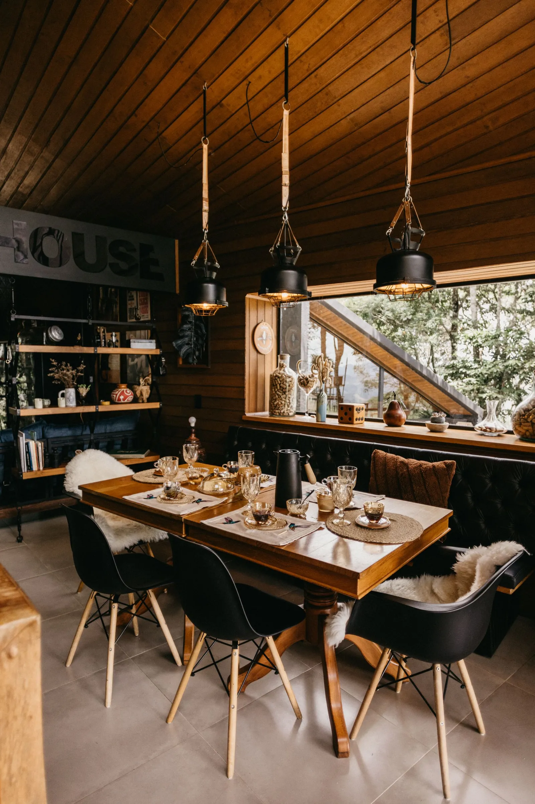
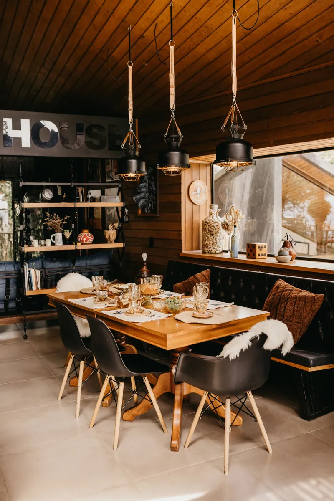
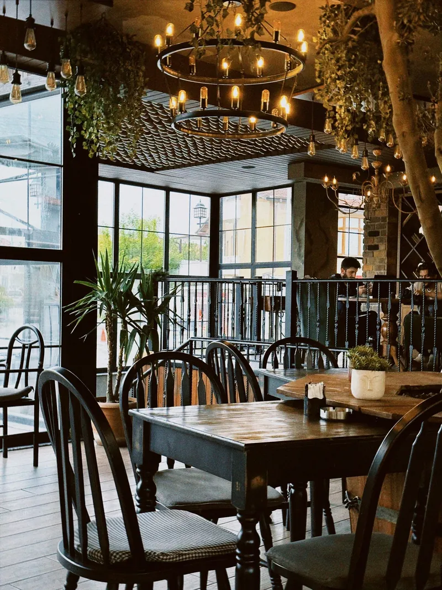
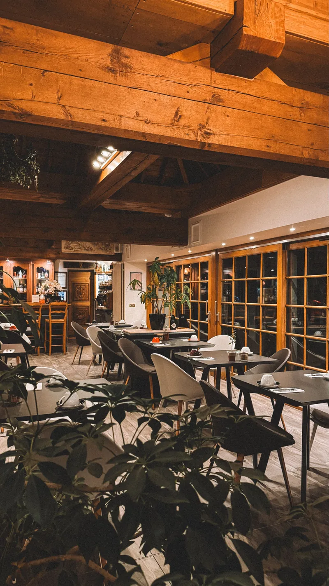

Gasthaus am Vierwaldstättersee
Regionale Küche,
die nach Zuhause schmeckt
Im Sonnenhof kochen wir mit dem, was rund um den See wächst und wachsen darf. Frisch, saisonal und ohne Umwege auf Ihren Teller, in einer Stube, in der man gerne sitzen bleibt.
- Saisonale Karte
- Produkte aus der Region
- Mittagsmenü Mo–Fr
Speisekarte
Was gerade auf dem Tisch steht
Unsere Karte folgt den Jahreszeiten. Was hier steht, kochen wir heute, und wenn ein Produkt ausgeht, ist es ausgegangen. Das gehört für uns dazu.
Unsere Küche
Wir kochen so, wie wir selbst gerne essen
Ohne Umwege, ohne Effekthascherei, dafür mit Zutaten, deren Herkunft wir kennen.
Was auf der Karte steht, richtet sich nach dem, was gerade reif ist, und nicht umgekehrt. Deshalb ändert sich unsere Karte mehrmals im Jahr, und das eine oder andere Gericht bleibt nur ein paar Wochen. Fonds und Saucen ziehen wir selbst, Fleisch verarbeiten wir im Ganzen, und das Brot backen wir jeden Morgen frisch.
Vegetarische Gerichte sind bei uns keine Randnotiz. Sagen Sie uns bei der Reservation Bescheid, wenn Sie etwas nicht essen. Wir kochen gerne auch ausserhalb der Karte, wenn es die Küche zulässt.
Saisonal kochen
Die Karte folgt dem Jahr, nicht dem Katalog. Im Sommer der Garten, im Herbst der Wald.
Kurze Wege
Die meisten unserer Lieferanten erreichen wir mit dem Auto in weniger als einer halben Stunde.
Handarbeit
Spätzli, Fonds, Glace, Brot: was wir selbst machen können, machen wir selbst.
Platz für alle
Gaststube, Terrasse und ein Saal für Familienfeste und Vereinsanlässe.
Galerie
Ein Blick ins Haus
Gaststube, Terrassenstube und Saal, dazu ein paar gezeichnete Blicke auf das, was sonst noch zum Haus gehört.



Fotos und Zeichnungen sind hier bewusst gemischt. In einem echten Projekt stehen an beiden Stellen Ihre eigenen Bilder.
Reservation
Tisch reservieren
Schreiben Sie uns kurz, wann Sie kommen möchten. Wir bestätigen Ihre Reservation persönlich, meist innerhalb weniger Stunden.
Für Gruppen ab neun Personen, Familienfeste und Vereinsanlässe melden Sie sich am besten telefonisch. Dann besprechen wir gleich Saal, Menü und Zeitfenster.
-
Telefon
+41 00 000 00 00 -
E-Mail
info@sonnenhof-meggen.ch -
Restaurant Sonnenhof
Seeblickstrasse 14, 6045 Meggen
Ihre Anfrage
Felder mit sind Pflichtfelder.
Vielen Dank für Ihre Anfrage.In einer echten Installation ginge sie jetzt direkt an das Restaurant. Auf dieser Demo-Seite werden keine Daten übermittelt.
Öffnungszeiten & Anfahrt
Wann und wo Sie uns finden
| Montag | 11.30–14.00 · 17.30–23.00 |
|---|---|
| Dienstag | 11.30–14.00 · 17.30–23.00 |
| Mittwoch | 11.30–14.00 · 17.30–23.00 |
| Donnerstag | 11.30–14.00 · 17.30–23.00 |
| Freitag | 11.30–14.00 · 17.30–23.30 |
| Samstag | 11.30–14.00 · 17.30–23.30 |
| Sonntag | Ruhetag |
Die Terrasse ist bei schönem Wetter ab 11.00 Uhr geöffnet. Für Anlässe im Saal öffnen wir auch ausserhalb dieser Zeiten. Sprechen Sie uns an.
- Mit dem AutoAb Luzern in rund zehn Minuten Richtung Meggen. Gratis-Parkplätze direkt hinter dem Haus.
- Mit dem öffentlichen VerkehrBus 24 ab Luzern Bahnhof bis zur Haltestelle «Sonnenhof», von dort zwei Minuten zu Fuss.
- Zu Fuss dem See entlangDer Uferweg führt direkt an unserer Terrasse vorbei, ideal für einen Spaziergang vor dem Essen.